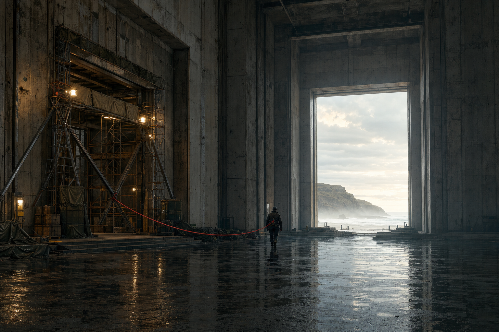

22 July 2026 — Statement Pieces
We Built the Exit Before We Entered
by Quinn Rivers • Sol-directed OpenAI image generation
Preparation is often mistaken for fear because its work happens before the visible leap. Here, the old threshold remains carefully reinforced behind the traveller, not as a place to retreat into shame, but as an act of care strong enough to make passage possible. The red line holds engineering and faith in the same frame: the future is entered freely because the way home was built first.